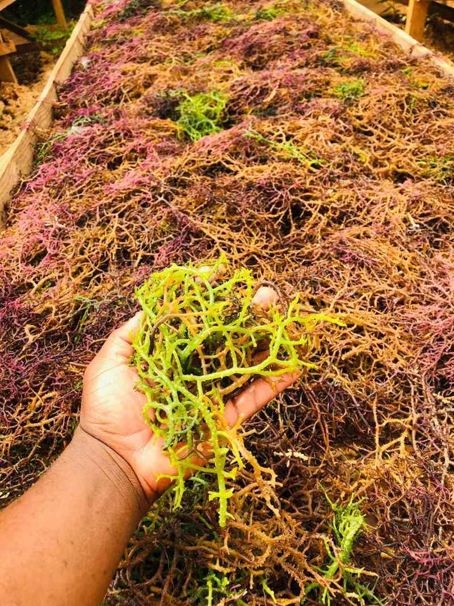

Kenya's coast, beyond the fish counter.
Explore Kenya's marine and blue economy — from fisheries and coastal communities to mangroves, seaweed, conservation, research and emerging ocean opportunities. We buy fish here every morning; this is the wider coast that fish comes from.
Curated from institutions, researchers and media covering Kenya's marine economy. We write a short summary in our own words and send you to the original — we do not republish other people's work.
Each topic gathers what we know, what we have documented, and what others are doing.
From Lamu in the north to Vanga on the Tanzanian border. Each place has its own fishery, its own habitats and its own people. We start where we buy — Shimoni.
Each place will grow into its own page — fisheries, ecosystems, programs, stories, research and opportunities. Shimoni and Mombasa are live; the rest are being built.
Stories, observations and experiences from Kenya's coast — reported by us, not curated from elsewhere. This is the half of the page we are responsible for.

The Pemba Channel runs close to shore here, so a small wooden boat can reach open-ocean fish and be home the same day. Reef, seagrass and mangrove sit inshore of it.

Not an abstract policy idea. On this coast it is seaweed lines, cold chain, landing sites and whether a fishing family can sell at a fair price.

The full chain, hour by hour: boats out at half four, landing around eleven, bought on the sand, cleaned, iced and moving the same day.

The FAO's global state-of-fisheries report was launched on our coast. What it said, and what it means for a small-boat fishery like this one.

Lost and abandoned nets keep killing long after they are dropped. What is being tried about it here.

Much of our sea moss is grown on lines in shallow water and sun-dried by women working together at Kibuyuni. A blue economy you can hold.
Institutions, research bodies and conservation groups working on Kenya's coast. We list only organizations we have verified, with their own official links.
Grants, fellowships, training, events and jobs in Kenya's marine and blue economy — with deadlines and official links.
What we have already written and can stand behind.
Know a coastal initiative we should feature? Tell us on WhatsApp — we check everything before it goes up.